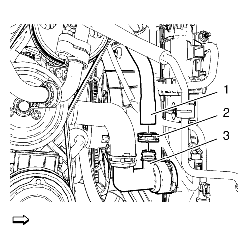
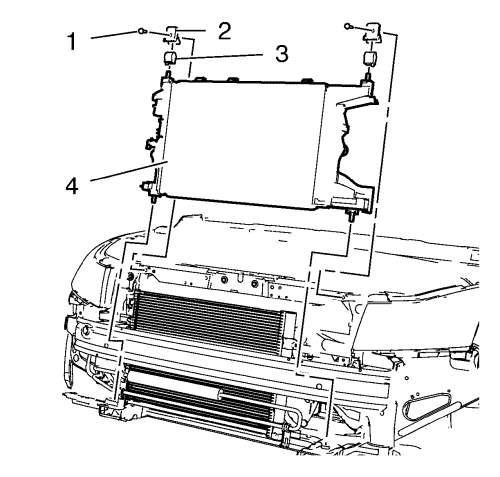

Sustitución del radiador — 1.6L LDE, LXT, LXV, 1.8L 2H0 y LUW
Procedimiento de desmontaje
- Abra el capó.
- Desconecte la batería. Consultar Desconexión y conexión del cable negativo de la batería → sin sistema de arranque/parada
- Desmonte el panel del paragolpes delantero. Consultar Sustitución del panel del parachoques delantero
- Desmonte el soporte de refuerzo de la rejilla del radiador. Consultar Sustitución del soporte de refuerzo de la rejilla del radiador
- Desmonte el conducto de entrada de aire. Consultar Sustitución del conducto de entrada del filtro de aire → 1.6L LDE, LXV, 1.8L 2H0 y LUW
- Desmonte el trinquete de bloqueo primario y secundario del capó. Consultar Sustitución del trinquete de bloque primario y secundario del capó
- Vacíe el sistema de refrigeración. Consultar Drenaje y llenado del sistema de refrigeración
- Retirar el protector de salpicaduras del habitáculo frontal. Consultar Sustitución del protector de salpicaduras del habitáculo frontal

- Afloje el clip (2).
- Retire el tubo flexible de salida del depósito de expansión del radiador (1) del adaptador (3).

- Afloje la abrazadera del tubo flexible de salida del radiador (5).
- Desmonte el tubo flexible de salida del radiador (3) del tubo de salida del radiador (4).

- Afloje la abrazadera del tubo flexible de entrada del radiador (2).
- Desmonte el tubo flexible de entrada (3) del radiador (1).
- En los vehículos con cambio automático:
Nota: No desmonte el ventilador del radiador.
- Desenganche el ventilador del radiador. Consultar Sustitución del ventilador del refrigerante del motor → 2.0L Diésel LNP → LDE, LXT, LXV, L2W, 2H0-MT → 1.4L LUH, LUJ - M32-6 MZ4 → LDE,LLU,LUJ,LUW,LXV,LXT,L2W,2H0-AT → 2.0L Diésel LLW
- Desenganche del radiador el tubo flexible de salida.

Nota: No extraiga el condensador. Eleve el condensador y vuelva a colocarlo según sea necesario.
- Desenganche el condensador (1) del radiador.
- Desmonte el sensor de temperatura del refrigerante del motor. Consultar Sustitución del sensor de temperatura del refrigerante del motor → Termostato → Radiador

- Retire los 2 tornillos (1) del radiador.
- Desmonte el soporte superior del radiador (2).
- Retire el aislante superior del radiador (3).
- Desmonte el radiador (4).
Procedimiento de montaje
- Monte el sensor de temperatura del refrigerante del motor. Consultar Sustitución del sensor de temperatura del refrigerante del motor → Termostato → Radiador
- Monte el radiador (4).
- Monte el aislante superior del radiador (3).
- Monte el soporte superior del radiador (2).
Precaución:Consulte Precaución con las fijaciones en la sección Prólogo.
- Monte los 2 tornillos del radiador (1) y apriételos a 22 N·m (17 lib. pie).
- Enganche el condensador (1) en el radiador.
- Desmonte el sensor de temperatura del refrigerante del motor. Consultar Sustitución del sensor de temperatura del refrigerante del motor → Termostato → Radiador
- Enganche el ventilador del radiador en el radiador. Consultar Sustitución del ventilador del refrigerante del motor → 2.0L Diésel LNP → LDE, LXT, LXV, L2W, 2H0-MT → 1.4L LUH, LUJ - M32-6 MZ4 → LDE,LLU,LUJ,LUW,LXV,LXT,L2W,2H0-AT → 2.0L Diésel LLW
- Enganche en el radiador el tubo flexible de salida del radiador.
- En los vehículos con cambio automático:
- Monte el tubo flexible de entrada del radiador (3) en el radiador (1).
- Monte la abrazadera del tubo flexible de entrada del radiador (2).
- Monte el tubo flexible de salida del depósito de expansión del radiador (1).
- Fije la abrazadera del tubo flexible (2).
- Monte el tubo flexible de salida del radiador (3) en el tubo de salida del radiador (4).
- Monte la abrazadera del tubo flexible de salida del radiador (5).
- Monte el protector contra salpicaduras del compartimento delantero. Consultar Sustitución del protector de salpicaduras del habitáculo frontal
- Llene el sistema de refrigeración. Consultar Drenaje y llenado del sistema de refrigeración
- Monte el trinquete de bloqueo primario y secundario del capó. Consultar Sustitución del trinquete de bloque primario y secundario del capó
- Monte el conducto de entrada de aire. Consultar Sustitución del conducto de entrada del filtro de aire → 1.6L LDE, LXV, 1.8L 2H0 y LUW
- Monte el apoyo de refuerzo de la rejilla del radiador. Consultar Sustitución del soporte de refuerzo de la rejilla del radiador
- Monte el panel del parachoques delantero. Consultar Sustitución del panel del parachoques delantero
- Conecte la batería. Consultar Desconexión y conexión del cable negativo de la batería → sin sistema de arranque/parada
- Cierre el capó.
| © Copyright Chevrolet. All rights reserved |